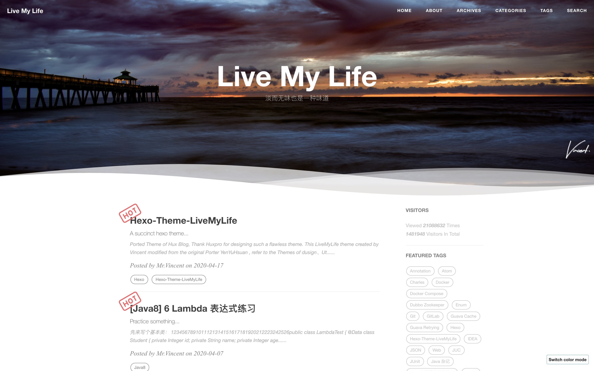
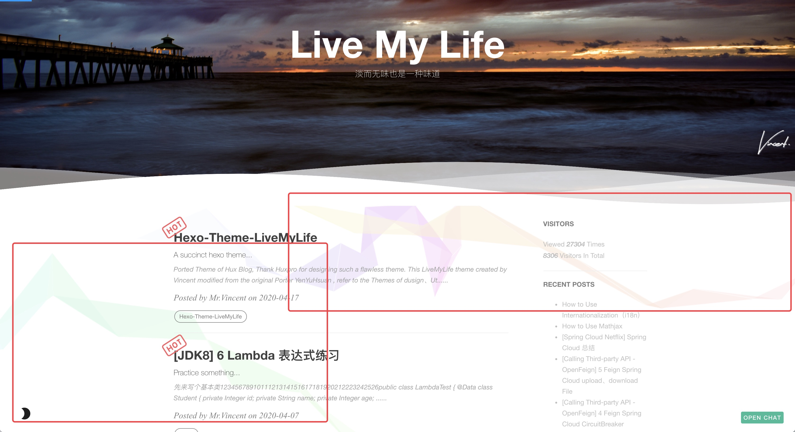

Hexo-Theme-LiveMyLife
移植 Hux Blog 的主题，感谢 Huxpro 设计了如此完美的主题。
由 Vincent 创建的 LiveMyLife 的主题修改来源 YenYuHsuan，参考主题 dusign、Utone，感谢 dusign、Utone。
仓库
Github 仓库地址：https://github.com/V-Vincen/hexo-theme-livemylife
Gitee 仓库地址：https://gitee.com/V_Vincen/hexo-theme-livemylife
预览 LiveMyLife 博客 ➾

快速开始
为了方便起见，我发布了整个项目，因此您可以按照下面的说明进行操作，然后就可以轻松自定义您自己的博客！
让我们开始!!!
安装 Node.js 和 Git
#For Mac
brew install node
brew install git
Windows：下载 & 安装 Node.js。-> Node.js
Windows：下载 & 安装 Git。-> Git
安装 Hexo
$ npm install -g hexo-cli
什么是 Hexo?
Hexo 是一个快速、简洁且高效的博客框架。Hexo 使用 Markdown（或其他渲染引擎）解析文章，在几秒内，即可利用靓丽的主题生成静态网页。
设置你的博客
$ hexo init blog
更多的命令 -> Hexo Commands
主题使用
初始化
cd blog
rm -rf scaffolds source themes _config.landscape.yml _config.yml package.json yarn.lock #just keep node_modules
git clone https://github.com/V-Vincen/hexo-theme-livemylife.git
mv hexo-theme-livemylife/* ./
rm -rf hexo-theme-livemylife
npm install
设置主题
修改 theme 属性值，在 _config.yml 配置文件中。
# Extensions
## Themes: https://hexo.io/themes/
## Plugins: https://hexo.io/plugins/
theme: livemylife
启动服务
hexo generate # or hexo g
hexo server # or hexo s
启动本地服务器。 默认访问地址 http://localhost:4000/。
更多命令 -> Hexo Commands
配置
使用您自己的信息修改 _config.yml 配置文件，尤其是以下部分：
网址信息配置
将以下信息替换为您自己的信息。
# Site
title: Live My Life
subtitle: 淡而无味也是一种味道
author: Mr.Vincent
timezone:
语言国际化 (i18n)
若要让您的网站以不同语言呈现，您可使用国际化（internationalization）功能。-> 文档：How to Use Internationalization（i18n）
# Internationalization (i18n) Setting
language: # At present, only en、cn and tw are supported. You can customize the language，refer to `languages/en.yml`.
- en
- cn
langselect:
enable: true # If open, it will automatically generation lang-select button.This button can jump in articles in different languages, but the articles must have the same name.
options: # langselect button display options
en: English
cn: 简体中文
# tw: 正體中文
i18n_dir: :lang
permalink: :lang/:title/
new_post_name: :lang/:title.md
# hexo-generator-i18n config
## Docs: https://github.com/xcatliu/hexo-generator-index-i18n
index_generator:
per_page: 10
pagination_dir: page
path: ''
order_by: -date
archive_generator:
enabled: false
per_page: 10
yearly: true
monthly: true
daily: false
order_by: -date
English 预览：

Chinese 预览：

CDN 配置
JsDelivr JsDelivr是一种免费，快速，可靠和自动化的CDN，可用于开源。如何使用 Jsdelivr？-> 文档：免费 CDN 提速 Github 静态资源访问
# CDN Setting
# Docs: https://www.jsdelivr.com/?docs=gh
# If Github Pages deploy，you can ues jsdelivr settings
#
jsdelivr:
jsdelivr_url: https://cdn.jsdelivr.net/gh/
github_username: V-Vincen
注意： Hexo-theme-livemylife 主题中有大量的 css、js 和 images，为了提高访问速度，主题中所有资源文件都使用了 JsDelivr CDN（内容分发）。但仅适用于 Github Pages 部署方式。-> 文档：How to apply JsDelivr CDN in Hexo-theme-livemylife Theme
站点设置
将自定义图片放在 img 目录中。
# Site settings
SEOTitle: JavaDev | 一如Java深似海
email: hexo-theme-livemylife@mail.com
description: "It's an IT blog..."
keyword: "Java,v-vincen,v-vincen,livemylife,IT blog,Blog"
header-img: img/header_img/newhome_bg.jpg
archives-img: img/header_img/archive_bg2.jpg
网站图标设置
favicon: img/avatar/favicon.jpg
签名设置
将您的签名图片复制到 <root>/img/signature 并修改配置文件 _config.yml。
signature: true # show signature
signature-img: img/signature/<your-signature>
如何制作签名 -> Free Online Signature
波浪设置
# Wave settings
wave: true
案例：

社交网络服务设置
如果您不想显示它，则可以直接将其删除。
# SNS settings
# RSS: true
github_username: V-Vincen
twitter_username: V_Vincen_
instagram_username: V_Vincen_
# facebook_username: yourAccount
# linkedin_username: yourAccount
# zhihu_username: yourAccount
weibo_username: WVincen
侧边栏设置
将您的头像复制到 <root>/img/avatar 并修改配置文件 _config.yml。
sidebar: true # whether or not using Sidebar.
sidebar-about-description: "I don't know where I am going ,but I am on my way..."
sidebar-avatar: img/avatar/vincnet.jpg # use absolute URL, seeing it's used in both `/` and `/about/`
widgets:
- visitor # busuanzi: https://busuanzi.ibruce.info/
- featured-tags
- short-about
- recent-posts
- friends-blog
- archive
- category
# widget behavior
## Archive
archive_type: 'monthly'
show_count: true
## Featured Tags
featured-tags: true # whether or not using Feature-Tags
featured-condition-size: 0 # A tag will be featured if the size of it is more than this
## Friends
friends: [
{
title: "V_Vincen",
href: "https://v-vincen.life/"
},{
title: "Teacher Ye",
href: "http://teacherye.com/"
}
]
评论系统设置
Hexo-Theme-LiveMyLife 主题暂时支持三种评论方式。我使用 gitalk 为默认评论系统。
Gitalk
Gitalk 是基于 GitHub Issue 和 Preact 的现代化的评论组件。 有关详细的配置方法，请参考 Gitalk 官方文档。
# Gitalk Settings
# Doc: https://github.com/gitalk/gitalk/blob/master/readme-cn.md
gitalk:
owner: # 'GitHub repo owner'
admin: # ['GitHub repo owner and collaborators, only these guys can initialize github issues']
repo: # 'GitHub repo'
clientID: # 'GitHub Application Client ID'
clientSecret: # 'GitHub Application Client Secret'
perPage: 10 # Pagination size, with maximum 100.
pagerDirection: last # Comment sorting direction, available values are last and first.
createIssueManually: false # By default, Gitalk will create a corresponding github issue for your every single page automatically when the logined user is belong to the admin users. You can create it manually by setting this option to true
language: en # Localization language key, en, zh-CN and zh-TW are currently available.
maxCommentHeight: 250 # An optional number to limit comments' max height, over which comments will be folded.Default 250.
proxy: https://cors-anywhere.azm.workers.dev/https://github.com/login/oauth/access_token # GitHub oauth request reverse proxy for CORS. For example, the demo url is 'https://cors-anywhere.herokuapp.com/https://github.com/login/oauth/access_token'.You should deploy your own proxy url as in this issue https://github.com/gitalk/gitalk/issues/429.
Gitment
Gitment 是一个基于 GitHub Issues 的评论系统，可以在前端使用它，而无需任何服务器端实现。有关详细的配置方法，请参见 Gitment 官方文档。
## Gitment Settings
## Doc: https://github.com/imsun/gitment
gitment:
owner: # Your GitHub ID. Required.
repo: # The repository to store your comments. Make sure you're repo's owner. Required.
client_id: # GitHub client ID. Required.
client_secret: # GitHub client secret. Required.
desc: # An optional description for your page, used in issue's body. Default ''.
perPage: 10 # An optional number to which comments will be paginated. Default 20.
maxCommentHeight: 250 # An optional number to limit comments' max height, over which comments will be folded. Default 250.
Disqus
如果你想要使用 Disqus 评论系统，则必须有代理。
# Disqus settings
disqus_username: your-disqus-ID
站点分析设置
如何配置站点分析? -> 文档：Analytics and Sitemap Settings
# Analytics settings
# Google Analytics
ga_track_id: UA-xxxxxx-xx # Format: UA-xxxxxx-xx
# Baidu Analytics
ba_track_id: ba_track_id
站点地图设置
如何配置站点地图? -> 文档：Analytics and Sitemap Settings
# Google sitemap
sitemap:
path: sitemap.xml
# Baidu sitemap
baidusitemap:
path: baidusitemap.xml
baidu_push: true
置顶图标设置
我使用的置顶图标是键头，你可以在 sourcre/css/images 目录下替换你自己想要的图标。
文章标签
您可以选择是否显示博文标签。
home_posts_tag: true
案例：

Markdown 渲染器
我使用的 markdown 渲染引擎插件是 hexo-renderer-markdown-it。
# Markdown-it config
## Docs: https://github.com/celsomiranda/hexo-renderer-markdown-it/wiki
markdown:
render:
html: true
xhtmlOut: false
breaks: true
linkify: true
typographer: true
quotes: '“”‘’'
安装 Mathjax（数学公式渲染器）
要安装 Mathjax，请单击 How to Use Mathjax 以获取详细的教程。
Anchorjs（锚点）设置
如果你想要更改文章目录标题前部的锚点 “❡”，则可以到 layout/_partial/anchorjs.ejs 目录下进行更改。如何使用 anchorjs，请参阅 AnchorJS 以获取详细示例。
# Anchorjs Settings
anchorjs: true # if you want to customize anchor. check out line:26 of `anchorjs.ejs`
async("//cdn.bootcss.com/anchor-js/1.1.1/anchor.min.js",function(){
anchors.options = {
visible: 'hover',
placement: 'left',
icon: '❡'
// icon: 'ℬ'
};
anchors.add().remove('.intro-header h1').remove('.subheading').remove('.sidebar-container h5');
})
博文置顶
# article top
top: true
Hexo-theme-livemylife 主题添加了文章顶部功能，只要在您的 markdown 笔记中添加属性sticky: number 配置，文章按此数字排序。
案例：

文章字数统计设置
WordCount 是 Hexo 的文章字数统计插件. 有关详细的配置方法，请参见 WordCount 文档。
# Dependencies: https://github.com/willin/hexo-wordcount
# Docs: https://www.npmjs.com/package/hexo-wordcount
wordcount: true
Busuanzi（不蒜子）设置
Busuanzi 是一个网站流量统计插件。如何使用 Busuanzi，有关详细示例，请参见 Busuanzi 文档。
## Dependencies: https://busuanzi.ibruce.info/
## Docs: https://ibruce.info/
busuanzi: true
顶部滚动进度条设置
# top scroll progress
scroll: true
著作权声明设置
tip:
enable: true
copyright: Say what you think... # If the copyright is blank, the default value will be used.
社交分享博文设置
#Docs: https://github.com/overtrue/share.js
share: true
Viewer（图片预览）设置
Viewer 是一个简单的 jQuery 图片预览插件. 让我们首先看一个 demo。有关详细配置，请参见 Viewer 官方文档。 如果要修改 Viewer 的 options 设置，则可以到 sourcre/js/viewer/pic-viewer.js 目录下修改。
# Viewer config
viewer: true
主题模式设置
Hexo-Theme-LiveMyLife 主题暂时支持两种主题模式。
# ThemeColor config
themecolor:
enable: true
mode: dark # themecolor mode light or dark, default light
明亮主题模式预览：

黑暗主题模式预览：

鼠标点击效果设置
# Mouseclick config
mouseclick:
enable: true
content:
- The first step is as good as half over...
- Laugh and grow fat...
- Man proposes God disposes...
- When all else is lost the future still remains...
- Wasting time is robbing oneself...
- Sharp tools make good work...
- Cease to struggle and you cease to live...
- A friend in need is a friend indeed...
- Faith can move mountains...
color:
- '#9933CC'
- '#339933'
- '#66CCCC'
- '#FF99CC'
- '#CCCCFF'
- '#6666CC'
- '#663399'
- '#66CC99'
- '#FF0033'
鼠标点击效果预览：

背景绸带效果设置
ribbonDynamic: true
背景绸带效果预览：

背景线画布效果设置
bglinecanvas: true # The special effects will take up a lot of cpu resorces, please open it carefully.
背景线画布效果预览：

搜索设置
# Dependencies: https://github.com/V-Vincen/hexo-generator-zip-search
search:
enable: true
path: search.json
zipPath: search.flv
versionPath: searchVersion.json
field: post
# if auto, trigger search by changing input
# if manual, trigger search by pressing enter key or search button
trigger: auto
# show top n results per article, show all results by setting to -1
top_n_per_article: 1
Gitter（聊天室）
Gitter 是一个聊天和网络平台，通过消息、内容和发现，帮助管理、发展和连接社区。 详细配置方法请查看 Gitter 官方文档。
## Docs:https://gitter.im/?utm_source=left-menu-logo
##
gitter:
room: your-community/your-room
部署
替换为你自己的仓库地址。
deploy:
type: git
repo: https://github.com/<yourAccount>/<repo> # or https://gitee.com/<yourAccount>/<repo>
branch: <your-branch>
Hexo 常用命令
hexo new post "<post name>" # you can change post to another layout if you want
hexo clean && hexo generate # generate the static file
hexo server # run hexo in local environment
hexo deploy # hexo will push the static files automatically into the specific branch(gh-pages) of your repo!
有一个好的体验 ^_^
版权声明：本博客所有文章除特殊声明外，均采用 CC BY-NC 4.0 许可协议。转载请注明出处 yukun的博客！